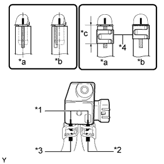

ДИФФЕРЕНЦИАЛЬНЫЙ ДАТЧИК ДАВЛЕНИЯ > УСТАНОВКА |
| 1. УСТАНОВИТЕ ДИФФЕРЕНЦИАЛЬНЫЙ ДАТЧИК ДАВЛЕНИЯ В СБОРЕ |
|  |
Установите 2 новых фиксатора, воздушный шланг выпускной трубы № 6 и воздушный шланг выпускной трубы № 7 на дифференциальный датчик давления.
| *1 | Маркировочная |
| *2 | Метка, нанесенная белой краской |
| *3 | Метка, нанесенная желтой краской |
| *4 | Фиксатор |
| *a | Правильно |
| *b | Неправильно |
| *c | 14,3 мм (0,562 дюйма) или менее |
Установите дифференциальный датчик давления и закрепите его гайкой.
| 2. УСТАНОВИТЕ КРОНШТЕЙН ДАТЧИКА (для моделей с механической трансмиссией) |
Установите кронштейн датчика и закрепите его болтом.
Подсоедините разъем датчика и закрепите зажим.
| 3. УСТАНОВИТЕ КРОНШТЕЙН ДАТЧИКА № 1 (для моделей с автоматической трансмиссией) |
Установите кронштейн датчика и закрепите его болтом.
Установите кронштейн датчика № 1 и закрепите его болтом и гайкой.
Закрепите 4 зажима и подсоедините разъем датчика.
| 4. УСТАНОВИТЕ ПЕРЕДНИЙ ТЕПЛОЗАЩИТНЫЙ ЭКРАН ПОЛА № 1 |
Установите передний теплозащитный экран пола № 1 и закрепите его 3 гайками.
| 5. УСТАНОВИТЕ ПРИЕМНУЮ ТРУБУ В СБОРЕ |